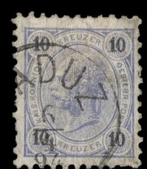
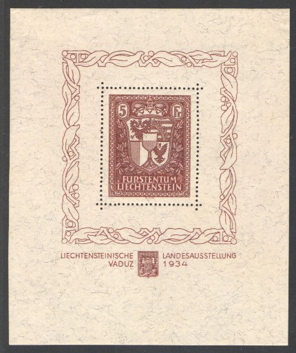
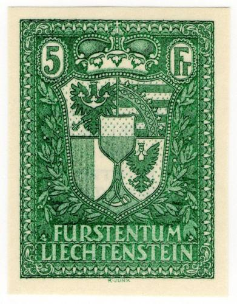
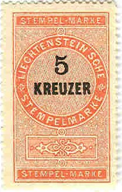

{kind=link}

Note: on my website many of the
pictures can not be seen! They are of course present in the
catalogue;
contact me if you want to purchase the catalogue.
Before 1912 the stamps of Austria were used in Liechtenstein, example:

(Stamp of Austria, cancelled in Vaduz)
'LIECHTENSTEIN' straight
5 h green 10 h red 25 h blue
These stamps have perforation 12 1/2
Value of the stamps |
|||
vc = very common c = common * = not so common ** = uncommon |
*** = very uncommon R = rare RR = very rare RRR = extremely rare |
||
| Value | Unused | Used | Remarks |
| 5 h | *** | *** | |
| 10 h | *** | *** | |
| 25 h | *** | *** | |
'LIECHTENSTEIN' curved (1917)
10 h red 15 h brown 20 h green 25 h blue
These stamps have perforation 12 1/2.
Value of the stamps |
|||
vc = very common c = common * = not so common ** = uncommon |
*** = very uncommon R = rare RR = very rare RRR = extremely rare |
||
| Value | Unused | Used | Remarks |
| 10 h | c | c | |
| 15 h | c | c | |
| 20 h | c | c | |
| 25 h | c | c | |
Surcharged with fancy design on 'K.K. OESTERR. POST'
10 h red 25 h blue '1 KRONE' on 15 h brown 2 1/2 Kr on 20 h green
Value of the stamps |
|||
vc = very common c = common * = not so common ** = uncommon |
*** = very uncommon R = rare RR = very rare RRR = extremely rare |
||
| Value | Unused | Used | Remarks |
| 10 h | * | * | |
| 25 h | * | * | |
| 1 K on 15 h | * | * | |
| 2 1/2 K on 20 h | * | * | |
60 th year of reign of Johan II (1918), '1858 1918' added in design

20 h green
This stamp has perforation 12 1/2.
Value of the stamps |
|||
vc = very common c = common * = not so common ** = uncommon |
*** = very uncommon R = rare RR = very rare RRR = extremely rare |
||
| Value | Unused | Used | Remarks |
| 20 h | * | c | |

3 h violet 5 h green
These stamps have perforation 12 1/2.
Value of the stamps |
|||
vc = very common c = common * = not so common ** = uncommon |
*** = very uncommon R = rare RR = very rare RRR = extremely rare |
||
| Value | Unused | Used | Remarks |
| 3 h | c | c | |
| 5 h | c | c | |
Overprinted with fancy desing over 'K.K. OESTERR. POST'
5 h green '40' on 3 h violet
Value of the stamps |
|||
vc = very common c = common * = not so common ** = uncommon |
*** = very uncommon R = rare RR = very rare RRR = extremely rare |
||
| Value | Unused | Used | Remarks |
| 5 h | * | * | |
| 40 on 3 h | * | * | |
5 h yellow (arms) 10 h orange (arms) 15 h blue (arms) 20 h brown (arms) 25 h green (arms) 25 h green (St.Mamerten) 30 h black (arms) 40 h red (arms) 40 h red (Gutenberg castle) 60 h brown (Vaduz house) 80 h red (church) 1 K blue (arms) 1 K violet (Vaduz castle) 2 K blue (Bendern) 5 K black (Johann I) 7 1/2 K grey (Johann II) 10 K yellow (arms, larger size) Surcharged (1921)

'2 Rp.' (violet, 2 types) on 10 h orange
50 h green 80 h red 2 K blue
These stamps should be perforated. Imperforate stamps were brought into the market through illegal means.
2 Rp yellow 2 1/2 Rp black 3 Rp orange 5 Rp olive 7 1/2 Rp blue 10 Rp green 13 Rp brown 15 Rp violet Surcharged (1924) '5' on 7 1/2 Rp blue '10' on 13 Rp brown


(Stamps of 1921)
5 Rp brown and blue (wine culture, 1924) 20 Rp violet and black (Mamertus chapel) 25 Rp red and black (Vaduz castle) 30 Rp green and black (Bendern church) 30 Rp blue and black (Bendern church, 1925) 35 Rp brown and black (Johann II) 40 Rp blue and black (Schaan church) 50 Rp green and black (Gutenberg castle) 80 Rp brown and black (Vaduz house) 1 F red and black (Vaduz view) 1 1/2 F blue (Vaduz church, 1925)
10 Rp (+ 5) green 20 Rp (+ 5) red 30 Rp (+ 5) blue
10 Rp green 20 Rp red
10 Rp (+ 5) green 20 Rp (+ 5) red 30 Rp (+ 5) blue
5 Rp + 5 Rp lilac and brown (broken bridge) 10 Rp + 10 Rp green and brown (flooded village) 20 Rp + 10 Rp red and brown (people in boat) 30 Rp + 10 Rp blue and brown (fleeing people)
Johann II
10 Rp brown and olive 20 Rp orange and olvie 30 Rp blue and olive 60 Rp lilac and olive Johann II in 1858 and 1928
1.20 F blue 1.50 F brown 2 F red 5 F green
10 Rp green 20 Rp red 30 Rp blue 70 Rp brown
3 Rp red (grape farming) 5 Rp green 10 Rp violet 20 Rp red 25 Rp black 30 Rp blue 35 Rp green 40 Rp brown 50 Rp black (Malbun) 60 Rp black (Gutenberg castle) 90 Rp lilac (Schellenberg monastry) 1.20 F brown (Vaduz castle) 1.50 F violet (Pfalzerhutte) 2 F green and brown (Franz I and his wife)
15 Rp brown 20 Rp black 25 Rp brown 35 Rp blue 45 Rp green 1 F red
1 F olive-black 2 F black

Forgery of the 1 F stamp with inscription 'FAUX' at the bottom.
I've also seen perforated forgeries with 'FAUX' at the bottom of
both values.
10 Rp (+ 5) green 20 Rp (+ 5) red 30 Rp (+ 10) blue

25 Rp orange (Samina valley) 90 Rp green (Gutenberg castle) 1.20 F brown (Vaduz castle)
10 Rp violet 20 Rp red 30 Rp blue
3 Rp brown (arms) 5 Rp green (Dreischwestern mountain) 10 Rp violet (Schaan) 15 Rp orange (Bendern) 20 Rp red (Vaduz townhall) 25 Rp brown (Samina valley) 30 Rp blue 35 Rp olvie (Schnellenberg) 40 Rp brown 50 Rp brown (Vaduz castle) 60 Rp red (Vaduz castle) 90 Rp green (Gutenberg castle) 1.20 F blue (Pfalzerhutte) 1.50 F brown 2 F brown (Elsa, wife of Franz I) 3 F blue on grey (Franz I) 5 F violet (arms, large size) 5 F brown (amrs, large size)
The 5 F brown was issued in a minisheet for an exhibition in Vaduz ("LIECHTENSTEINISCHE LANDESAUSSTELLUNG VADUZ 1934"):

Reprints in black (and green?) for the London 1961 exhibition.

1961 reprint in green of the 5 F value.
5 h red 10 h red 15 h red 20 h red 25 h red 30 h red 40 h red 50 h red 80 h red 1 K blue 2 K blue 5 K blue
Value of the stamps |
|||
vc = very common c = common * = not so common ** = uncommon |
*** = very uncommon R = rare RR = very rare RRR = extremely rare |
||
| Value | Unused | Used | Remarks |
| 5 h to 2 K | c | c | |
| 5 K | * | * | |
5 r violet and orange 10 r violet and orange 15 r violet and orange 20 r violet and orange 25 r violet and orange 30 r violet and orange 40 r violet and orange 50 r violet and orange
Example:
(1918)
This local label was used in Vaduz-Sevelen.
Fiscal stamps were issued much earlier than postage stamps in Liechtenstein, the first ones appeared in 1879.

5 k red and black 10 k brown and black 20 k yellow and black 25 k green and black 30 k grey and black 50 k violet (several shades) and black 1 G blue and black 1 G yellow and red (1895) 2 G brown and black 2 G violet and red (1895) 5 G red and black 5 G blue and red (1895) 10 G orange and black 10 G olive and red (1895)
10 h red and black 20 h brown and black 50 h green and black 60 h brown and black 1 K brown and red 2 K violet and red 5 K blue and red 10 K green and red
I have also seen the value 1 K(?) with surcharge '1 Franken 1'. Other surcharged stamps might exist.
In this design I have seen 50 p green and orange, 1 F green, 2 F red and brown (2 varieties differing in the value inscription), 2 F red and 5 F blue and black. I don't know when this design was issued.
{kind=link}
{kind=link}